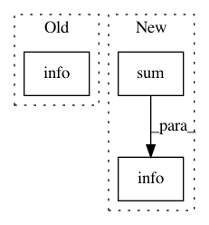

699898507179e8429792c137b5af404551d049e1,tools/test_lanenet.py,,test_lanenet_batch,#Any#Any#Any#Any#Any#,136
Before Change
image_name = ops.split(image_path_epoch[index])[1]
image_save_path = ops.join(save_dir, image_name)
cv2.imwrite(image_save_path, mask_image)
log.info("[Epoch:{:d}] Detection image {:s} complete".format(epoch, image_name))
sess.close()
return
After Change
image_save_path = ops.join(save_dir, image_name)
cv2.imwrite(image_save_path, mask_image)
// log.info("[Epoch:{:d}] Detection image {:s} complete".format(epoch, image_name))
log.info("[Epoch:{:d}] 进行{:d}张图像车道线聚类, 共耗时: {:.5f}s, 平均每张耗时: {:.5f}".format(
epoch, len(image_path_epoch), np.sum(cluster_time), np.mean(cluster_time)))
sess.close()
return
In pattern: SUPERPATTERN
Frequency: 3
Non-data size: 3
Instances
Project Name: MaybeShewill-CV/lanenet-lane-detection
Commit Name: 699898507179e8429792c137b5af404551d049e1
Time: 2018-05-31
Author: luoyao@baidu.com
File Name: tools/test_lanenet.py
Class Name:
Method Name: test_lanenet_batch
Project Name: RaRe-Technologies/gensim
Commit Name: 599b6aea7827c30b2ecb281c80d5171e7de273c9
Time: 2015-07-06
Author: radimrehurek@seznam.cz
File Name: gensim/models/word2vec.py
Class Name: Word2Vec
Method Name: scan_vocab
Project Name: RaRe-Technologies/gensim
Commit Name: 61d16bbf3147208c426e001299dca496bf2b5248
Time: 2015-07-06
Author: radimrehurek@seznam.cz
File Name: gensim/models/word2vec.py
Class Name: Word2Vec
Method Name: scan_vocab